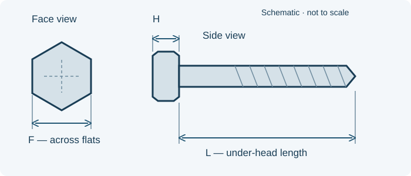

// TECHNICAL RESOURCES
MS35312 nickel-copper fine-thread hex cap screws.
Look up MS35312 threads, under-head lengths and head dimensions. Filter the reference sizes and request a quote for the complete part number.
// DIMENSIONS & PART IDENTIFICATION
Hex cap screw length and head dimensions

Schematic only; not to scale. Letter labels are keys for this illustration. Use the applicable part specification for dimensions, tolerances and measurement conventions.
// PART IDENTIFICATION
Identify the head, material and thread
MS35312 identifies nickel-copper-alloy hexagon-head cap screws with UNF-2A threads and a plain finish. The reviewed material requirement is QQ-N-281 Class A with a minimum ultimate tensile strength of 80,000 psi. The protective-coating note specifies none. This table covers 66 selected references across 1/4, 3/8, 1/2 and 5/8-inch nominal diameters, with under-head lengths through 3.000 inches. The reviewed MS35312A issue marks the entire family inactive for new design after 15 February 1973. These historical references support existing drawing callouts.
// REFERENCE SIZES
MS35312 part-number and dimension table
Reference selections for identification and quotation. Webson confirms availability by inquiry; these rows do not indicate stocked inventory.
No matching entries. Clear the filters or try a shorter search.
Scroll sideways to see all columns. The first column stays visible.
| Part number | Thread | Length per drawing (in) | Length tolerance (in) | Head across flats limits F (in) | Head height limits H (in) | Request pricing |
|---|---|---|---|---|---|---|
| MS35312-1 | 1/4-28 | 0.375 | +0.000 / −0.030 | 0.4280–0.4375 | 0.150–0.163 | Quote MS35312-1 → |
| MS35312-2 | 1/4-28 | 0.438 | +0.000 / −0.030 | 0.4280–0.4375 | 0.150–0.163 | Quote MS35312-2 → |
| MS35312-3 | 1/4-28 | 0.500 | +0.000 / −0.030 | 0.4280–0.4375 | 0.150–0.163 | Quote MS35312-3 → |
| MS35312-4 | 1/4-28 | 0.562 | +0.000 / −0.030 | 0.4280–0.4375 | 0.150–0.163 | Quote MS35312-4 → |
| MS35312-5 | 1/4-28 | 0.625 | +0.000 / −0.030 | 0.4280–0.4375 | 0.150–0.163 | Quote MS35312-5 → |
| MS35312-6 | 1/4-28 | 0.750 | +0.000 / −0.030 | 0.4280–0.4375 | 0.150–0.163 | Quote MS35312-6 → |
| MS35312-7 | 1/4-28 | 0.875 | +0.000 / −0.030 | 0.4280–0.4375 | 0.150–0.163 | Quote MS35312-7 → |
| MS35312-8 | 1/4-28 | 1.000 | +0.000 / −0.030 | 0.4280–0.4375 | 0.150–0.163 | Quote MS35312-8 → |
| MS35312-9 | 1/4-28 | 1.125 | +0.000 / −0.040 | 0.4280–0.4375 | 0.150–0.163 | Quote MS35312-9 → |
| MS35312-10 | 1/4-28 | 1.250 | +0.000 / −0.040 | 0.4280–0.4375 | 0.150–0.163 | Quote MS35312-10 → |
| MS35312-11 | 1/4-28 | 1.375 | +0.000 / −0.040 | 0.4280–0.4375 | 0.150–0.163 | Quote MS35312-11 → |
| MS35312-12 | 1/4-28 | 1.500 | +0.000 / −0.040 | 0.4280–0.4375 | 0.150–0.163 | Quote MS35312-12 → |
| MS35312-13 | 1/4-28 | 1.750 | +0.000 / −0.040 | 0.4280–0.4375 | 0.150–0.163 | Quote MS35312-13 → |
| MS35312-14 | 1/4-28 | 2.000 | +0.000 / −0.040 | 0.4280–0.4375 | 0.150–0.163 | Quote MS35312-14 → |
| MS35312-15 | 1/4-28 | 2.250 | +0.000 / −0.040 | 0.4280–0.4375 | 0.150–0.163 | Quote MS35312-15 → |
| MS35312-16 | 1/4-28 | 2.500 | +0.000 / −0.040 | 0.4280–0.4375 | 0.150–0.163 | Quote MS35312-16 → |
| MS35312-17 | 1/4-28 | 2.750 | +0.000 / −0.060 | 0.4280–0.4375 | 0.150–0.163 | Quote MS35312-17 → |
| MS35312-18 | 1/4-28 | 3.000 | +0.000 / −0.060 | 0.4280–0.4375 | 0.150–0.163 | Quote MS35312-18 → |
| MS35312-53 | 3/8-24 | 0.375 | +0.000 / −0.030 | 0.5510–0.5625 | 0.226–0.243 | Quote MS35312-53 → |
| MS35312-54 | 3/8-24 | 0.438 | +0.000 / −0.030 | 0.5510–0.5625 | 0.226–0.243 | Quote MS35312-54 → |
| MS35312-55 | 3/8-24 | 0.500 | +0.000 / −0.030 | 0.5510–0.5625 | 0.226–0.243 | Quote MS35312-55 → |
| MS35312-56 | 3/8-24 | 0.562 | +0.000 / −0.030 | 0.5510–0.5625 | 0.226–0.243 | Quote MS35312-56 → |
| MS35312-57 | 3/8-24 | 0.625 | +0.000 / −0.030 | 0.5510–0.5625 | 0.226–0.243 | Quote MS35312-57 → |
| MS35312-58 | 3/8-24 | 0.750 | +0.000 / −0.030 | 0.5510–0.5625 | 0.226–0.243 | Quote MS35312-58 → |
| MS35312-59 | 3/8-24 | 0.875 | +0.000 / −0.030 | 0.5510–0.5625 | 0.226–0.243 | Quote MS35312-59 → |
| MS35312-60 | 3/8-24 | 1.000 | +0.000 / −0.030 | 0.5510–0.5625 | 0.226–0.243 | Quote MS35312-60 → |
| MS35312-61 | 3/8-24 | 1.125 | +0.000 / −0.040 | 0.5510–0.5625 | 0.226–0.243 | Quote MS35312-61 → |
| MS35312-62 | 3/8-24 | 1.250 | +0.000 / −0.040 | 0.5510–0.5625 | 0.226–0.243 | Quote MS35312-62 → |
| MS35312-63 | 3/8-24 | 1.375 | +0.000 / −0.040 | 0.5510–0.5625 | 0.226–0.243 | Quote MS35312-63 → |
| MS35312-64 | 3/8-24 | 1.500 | +0.000 / −0.040 | 0.5510–0.5625 | 0.226–0.243 | Quote MS35312-64 → |
| MS35312-65 | 3/8-24 | 1.750 | +0.000 / −0.040 | 0.5510–0.5625 | 0.226–0.243 | Quote MS35312-65 → |
| MS35312-66 | 3/8-24 | 2.000 | +0.000 / −0.040 | 0.5510–0.5625 | 0.226–0.243 | Quote MS35312-66 → |
| MS35312-67 | 3/8-24 | 2.250 | +0.000 / −0.040 | 0.5510–0.5625 | 0.226–0.243 | Quote MS35312-67 → |
| MS35312-68 | 3/8-24 | 2.500 | +0.000 / −0.040 | 0.5510–0.5625 | 0.226–0.243 | Quote MS35312-68 → |
| MS35312-69 | 3/8-24 | 2.750 | +0.000 / −0.060 | 0.5510–0.5625 | 0.226–0.243 | Quote MS35312-69 → |
| MS35312-70 | 3/8-24 | 3.000 | +0.000 / −0.060 | 0.5510–0.5625 | 0.226–0.243 | Quote MS35312-70 → |
| MS35312-104 | 1/2-20 | 0.500 | +0.000 / −0.030 | 0.7360–0.7500 | 0.302–0.323 | Quote MS35312-104 → |
| MS35312-105 | 1/2-20 | 0.562 | +0.000 / −0.030 | 0.7360–0.7500 | 0.302–0.323 | Quote MS35312-105 → |
| MS35312-106 | 1/2-20 | 0.625 | +0.000 / −0.030 | 0.7360–0.7500 | 0.302–0.323 | Quote MS35312-106 → |
| MS35312-107 | 1/2-20 | 0.750 | +0.000 / −0.030 | 0.7360–0.7500 | 0.302–0.323 | Quote MS35312-107 → |
| MS35312-108 | 1/2-20 | 0.875 | +0.000 / −0.030 | 0.7360–0.7500 | 0.302–0.323 | Quote MS35312-108 → |
| MS35312-109 | 1/2-20 | 1.000 | +0.000 / −0.030 | 0.7360–0.7500 | 0.302–0.323 | Quote MS35312-109 → |
| MS35312-110 | 1/2-20 | 1.125 | +0.000 / −0.060 | 0.7360–0.7500 | 0.302–0.323 | Quote MS35312-110 → |
| MS35312-111 | 1/2-20 | 1.250 | +0.000 / −0.060 | 0.7360–0.7500 | 0.302–0.323 | Quote MS35312-111 → |
| MS35312-112 | 1/2-20 | 1.375 | +0.000 / −0.060 | 0.7360–0.7500 | 0.302–0.323 | Quote MS35312-112 → |
| MS35312-113 | 1/2-20 | 1.500 | +0.000 / −0.060 | 0.7360–0.7500 | 0.302–0.323 | Quote MS35312-113 → |
| MS35312-114 | 1/2-20 | 1.750 | +0.000 / −0.060 | 0.7360–0.7500 | 0.302–0.323 | Quote MS35312-114 → |
| MS35312-115 | 1/2-20 | 2.000 | +0.000 / −0.060 | 0.7360–0.7500 | 0.302–0.323 | Quote MS35312-115 → |
| MS35312-116 | 1/2-20 | 2.250 | +0.000 / −0.060 | 0.7360–0.7500 | 0.302–0.323 | Quote MS35312-116 → |
| MS35312-117 | 1/2-20 | 2.500 | +0.000 / −0.060 | 0.7360–0.7500 | 0.302–0.323 | Quote MS35312-117 → |
| MS35312-118 | 1/2-20 | 2.750 | +0.000 / −0.090 | 0.7360–0.7500 | 0.302–0.323 | Quote MS35312-118 → |
| MS35312-119 | 1/2-20 | 3.000 | +0.000 / −0.090 | 0.7360–0.7500 | 0.302–0.323 | Quote MS35312-119 → |
| MS35312-155 | 5/8-18 | 0.625 | +0.000 / −0.030 | 0.9220–0.9375 | 0.378–0.403 | Quote MS35312-155 → |
| MS35312-156 | 5/8-18 | 0.750 | +0.000 / −0.030 | 0.9220–0.9375 | 0.378–0.403 | Quote MS35312-156 → |
| MS35312-157 | 5/8-18 | 0.875 | +0.000 / −0.030 | 0.9220–0.9375 | 0.378–0.403 | Quote MS35312-157 → |
| MS35312-158 | 5/8-18 | 1.000 | +0.000 / −0.030 | 0.9220–0.9375 | 0.378–0.403 | Quote MS35312-158 → |
| MS35312-159 | 5/8-18 | 1.125 | +0.000 / −0.080 | 0.9220–0.9375 | 0.378–0.403 | Quote MS35312-159 → |
| MS35312-160 | 5/8-18 | 1.250 | +0.000 / −0.080 | 0.9220–0.9375 | 0.378–0.403 | Quote MS35312-160 → |
| MS35312-161 | 5/8-18 | 1.375 | +0.000 / −0.080 | 0.9220–0.9375 | 0.378–0.403 | Quote MS35312-161 → |
| MS35312-162 | 5/8-18 | 1.500 | +0.000 / −0.080 | 0.9220–0.9375 | 0.378–0.403 | Quote MS35312-162 → |
| MS35312-163 | 5/8-18 | 1.750 | +0.000 / −0.080 | 0.9220–0.9375 | 0.378–0.403 | Quote MS35312-163 → |
| MS35312-164 | 5/8-18 | 2.000 | +0.000 / −0.080 | 0.9220–0.9375 | 0.378–0.403 | Quote MS35312-164 → |
| MS35312-165 | 5/8-18 | 2.250 | +0.000 / −0.080 | 0.9220–0.9375 | 0.378–0.403 | Quote MS35312-165 → |
| MS35312-166 | 5/8-18 | 2.500 | +0.000 / −0.080 | 0.9220–0.9375 | 0.378–0.403 | Quote MS35312-166 → |
| MS35312-167 | 5/8-18 | 2.750 | +0.000 / −0.100 | 0.9220–0.9375 | 0.378–0.403 | Quote MS35312-167 → |
| MS35312-168 | 5/8-18 | 3.000 | +0.000 / −0.100 | 0.9220–0.9375 | 0.378–0.403 | Quote MS35312-168 → |
All dimensions are in inches. Printed decimal lengths such as 0.188, 0.312, 0.438 or 0.562 are retained where listed. The length tolerance column shows separate positive and negative allowances; these are not symmetric ± limits. Head dimensions are minimum–maximum drawing limits.
// MEASUREMENT GUIDE
Measure length and head geometry
L is measured from beneath the head to the screw tip. H is axial head height and F is head width across flats. The listed F limits describe the head, not a wrench or socket acceptance range.
The reviewed minimum thread-length rule is twice nominal diameter plus 0.250 inch, with a separate positive allowance and short-screw provisions. A listed under-head length is not a fixed grip length or a claim of full threading. The governing issue controls thread length and runout.
// ORDERING DETAILS
Read the complete part number
MS35312-3 identifies a 1/4-28 screw with 0.500-inch under-head length. MS35312-109 identifies a 1/2-20 screw with 1.000-inch length. Use the complete series and dash number; matching the dash number alone does not preserve thread pitch.
Nickel-copper alloy, passivated stainless steel and plated carbon or alloy steel are different requirements. A common thread and head envelope does not establish an approved material or strength substitution.
// FAMILY COMPARISON
Compare related screw families
// DRAWING REQUIREMENTS
Match the governing drawing issue
Dimensions summarize MS35312A, sheets 1–2, 15 February 1973. These are selected historical references for purchasing identification. Later amendments or notices may apply. The issue required by your drawing controls full geometry, thread, material, finish and inspection requirements. A successor standard name does not automatically authorize a part-number change or substitution.
// BUYER CHECKLIST
Prepare the requirement for quotation
- Complete designation, including all material, finish and locking suffixes.
- Quantity, required delivery date and controlling drawing or specification issue.
- Required certificates, source restrictions and lot traceability.
// SOURCE WITH WEBSON
Have a part number or bill of material?
Send the complete designation, quantity, required delivery date and documentation requirements. Webson will review your requirement for quotation.
Certified distribution. Requirements reviewed.
Webson is an AS9120B and ISO 9001:2015 certified distributor. Include required certificates, lot traceability and source restrictions with your inquiry so documentation and inspection requirements can be reviewed for the order.
Need a drawing-specific part?
Explore custom bolts and hex-head parts when the required geometry, material or finish calls for a made-to-print component. Your drawing and approval requirements define the custom configuration; Webson coordinates sourcing through manufacturing partners.